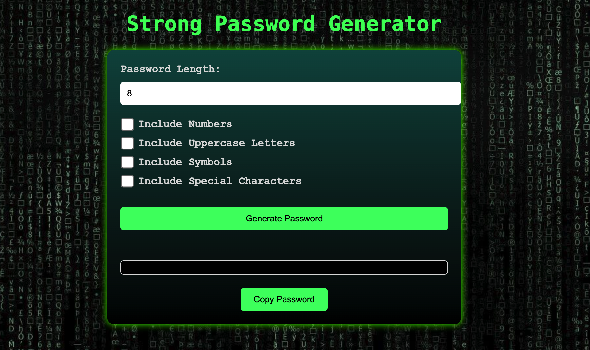

My Projects
Explore my Projects and other Work


File Integrity Monitoring System (FIM)
Welcome to the File Integrity Monitoring (FIM) system! This open-source project is designed to help you monitor the integrity of your important files and detect any unauthorized changes. Whether you're a cybersecurity enthusiast or a threat hunter, this tool will provide you with real-time alerts when file modifications occur.

Security Information andEvent Management (SIEM) - Sentinel-Lab
This project includes a PowerShell script to detect failed RDP attacks by analyzing Windows Event Logs. It integrates with a third-party API to gather attackers' geographical data. Demonstrated with Azure Sentinel, it tracks and maps RDP brute force attempts in real-time.
